来源：https://da6r699qsri.feishu.cn/docx/NyrcdYjecoq0lsxRkeucHmDSnwd
首先在浏览器打开DY官网，找到你需要获取数据的作品点击作品头像进入主页，然后再浏览器地址栏复制网址即可，下图演示：按照图顺序看，
图1是作品，鼠标左键点击进入看到的是作品
图2是作者头像，在点击他的头像。
图3点击他的昵称，浏览器会跳转到他的主页。
图4将浏览器地址栏的所有字符复制即可，这个就是主页地址。
关于地址怎么发送到电脑端，你可以在电脑登录微信，
手机发送到微信的文件传输助手，电脑端微信文件传输助手就可以同步消息。
图1：
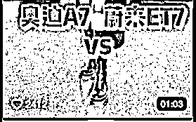
图2：
图3：
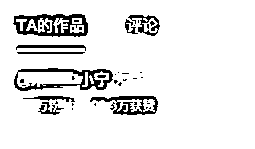
图4：
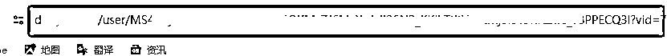
打开DY APP 找到你要提取作品，按照下方图片顺序操作：
图1：从作品点击作者头像进入他的主页。
图2：进入主页后右上角有3个小点点点击他，箭头指向的。
图3：点击分享主页，会弹出下拉框。
图4：点击复制连接即可，这样主页地址就复制到了。
关于地址怎么发送到电脑端，你可以在电脑登录微信，
手机发送到微信的文件传输助手，电脑端微信文件传输助手就可以同步消息。
图1：
图2：
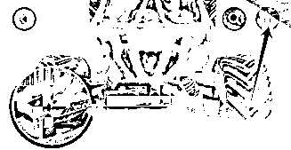
图3：
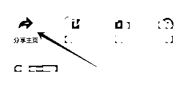
图4：
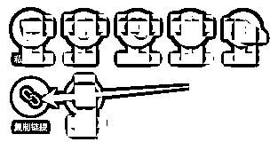
用于提取，删除，修改之类的操作，
最顶部的选择框，是操作列表列的全部选择框用途，可全选，选不选。
是根据你的添加顺序自动生成，
全部来自网页公开数据，这里不讲解。
是你提取下载的数据，识别方式，是根据你设置的目录，只要目录你在开始使用软件不去变更，作品数据不删除，他都会记录在内，例如你保存了10个作品，目录没有变，删除了其中一个作品，然后每次打开自动取寻找这个标题的作品是否存在，如果存在就自增1，你删除的那一个没有找到，最后显示的是本地存在9个作品。
添加主页后，自动显示默认，你可以手动修改，右键修改 或者 批量修改。
添加时间：添加主页后自动生成当前添加时间，以你本地电脑时间为准，不是网络时间。
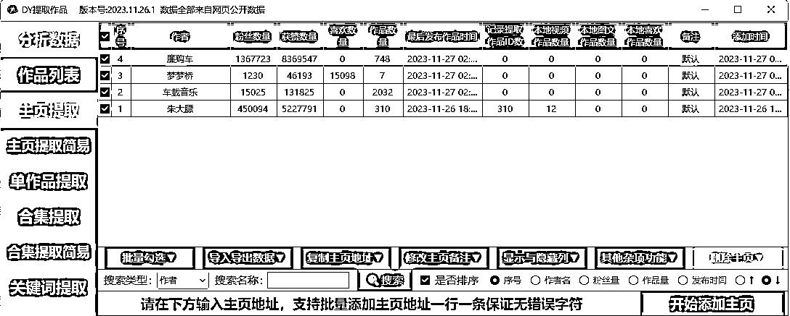
当你在主页列表随便一个作者主页一行，鼠标右键，会弹出菜单，这里有单独作者主页的功能。
当点击后选择的作者会自动上升一位。
当点击后选择的作者会自动下降一位。
是记录作品ID的数量，清空后归零，他和主页提取的未记录作品ID相关。
就是已经记录的当前作者你所提取到的作品ID，如果清零了就复制不到了。
是打开作者信息记录的文件，如果下载设置你不改变作品保存目录也在这里。
是这个作者的DY主页网址，复制后在浏览器粘贴上去即可打开。
是复制作者的昵称，这个没有什么好讲的。
是在当前列表删除这个作者，本地作者信息自动删除掉，作品数据不会删除。
这个用于分类，因为你们每个做的领域不一样，有的人做了好几个领域，
例如：动漫，小说，沙雕动画，可以备注每个作者是哪个分类的，
用途：可以批量勾选指定备注分类的，保存作品时可以按照备注目录保存，当提取作品时，作品自动添加主页备注。
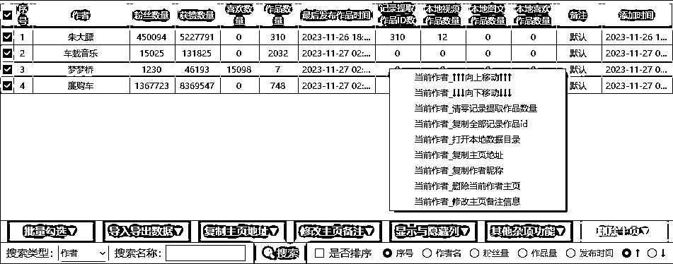
批量勾选按钮点击后会弹出一个菜单，选项，主页批量勾选只有备注，这就是上面说的分类批量勾选，
如果你有1000个主页 有3种分类：动漫，小说，沙雕动画，点击哪个就勾选哪个备注的全部主页。
需要注意的是：在勾选的时候不会去掉之前的勾选，请提前先去掉列表所有勾选，
点击序号两个字的签名的总选择框就会去掉全部勾选或者全部勾选。
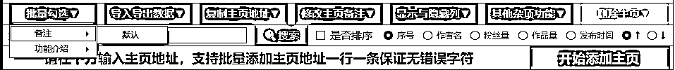
导出的TXT数据支持导入，Excel表格数据不支持导入。
导出的是主页列表全部主页数据，用于大数据分析，JSON格式。
导出的是主页列表勾选主页数据，用于大数据分析，JSON格式。
导出的是主页列表全部主页数据，用于Excel表格查看数据。
导出的是主页列表勾选主页数据，用于Excel表格查看数据。
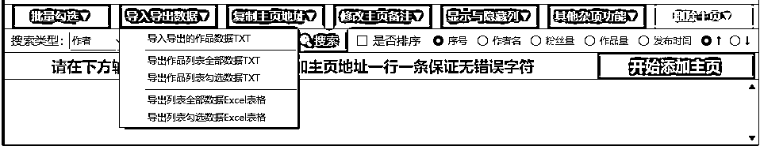
复制的是主页列表全部作者的主页网址。
复制的是主页列表勾选作者的主页网址。
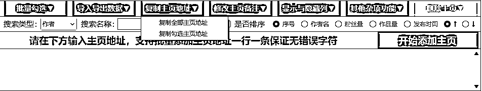
当点击后会弹出图2，输入新的备注信息，点击确定，全部主页的备注就变成了输入的。
当点击后会弹出图2，输入新的备注信息，点击确定，勾选主页的备注就变成了输入的。
小提示：如果修改单个主页备注可以列表右键修改。
图1
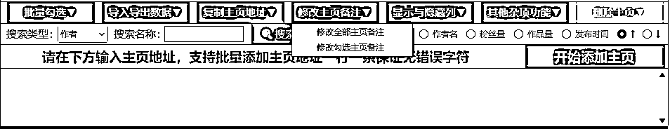
图2
当你点击后弹出的菜单，是主页列表对应的 每一列，
去掉前面的勾选，这个列就隐藏。
勾选前面的勾选，这个列就显示。
用途：减少不需要显示的列，显示你需要的数据。
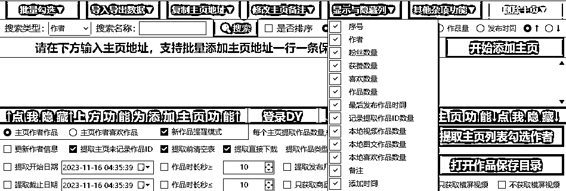
有的时候你删除了某个作品，列表不会自动刷新，你可以点击这个按钮。
点击后软件自动去更新作者信息，并不是去提取作品，然后会出现新数据与老数据对比报告。
如果存在新旧报告，会展示出来供你参考。
这个是列表全部主页作者清空记录提取作品ID。
这个是列表勾选主页作者清空记录提取作品ID。
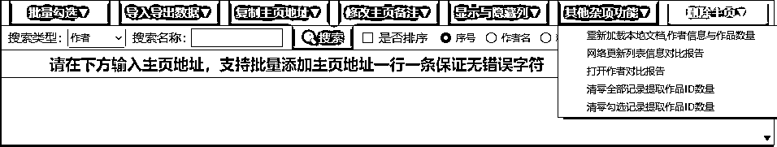
这个用途是删除主页列表全部作者数据，和本地保存的作者信息，不会删除作品数据。
这个用途是删除主页列表勾选作者数据，和本地保存的作者信息，不会删除作品数据。
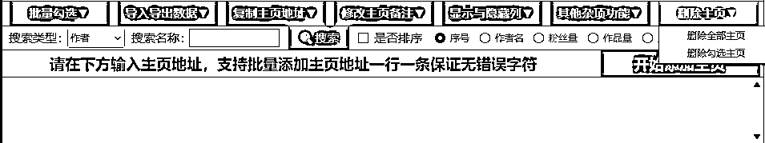
当你输入搜索名称后，点击搜索按钮，软件自动寻找你搜索的作者名称模糊搜索。
当你输入搜索名称后，点击搜索按钮，软件自动寻找你搜索的备注名称模糊搜索。
举例：列表有江湖数据工具箱的作者或备注，输入江湖两字即可搜索到，搜索到的自动拉篮勾选。
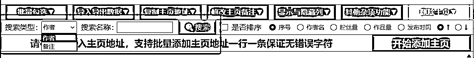
当勾选是否排序，根据你所选择的，自动排序，
左右面箭头：
↑代表从小到大的顺序(升序)
↓代表从大到小的顺序(降序)
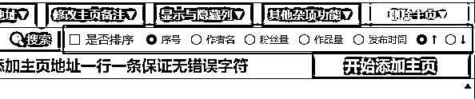
下图三个红色框框是按钮
最左边是隐藏添加主页功能，可以自己点击尝试，用途：不需要用的时候隐藏上看列表看的更多。
中间的按钮登录DY，点击后会弹出软件内置浏览器，自动打开DY官网，
你扫码登录后，等待几秒会自动弹出登录成功。
最右边是隐藏提取主页功能，可以自己点击尝试，用途：不需要用的时候隐藏上看列表看的更多。
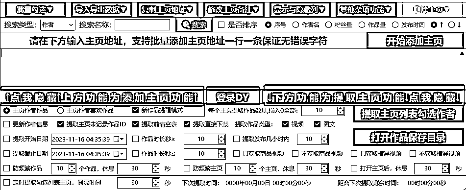
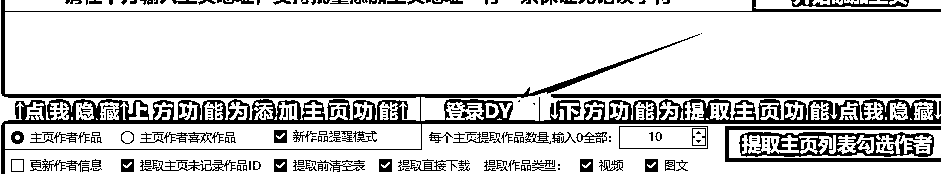
提取主页作品最为关键的如果你不登录，可能获取不到全部作品，上图的按钮点击后进入网页扫码登录，
注意必须是软件内的浏览器登录才可以。
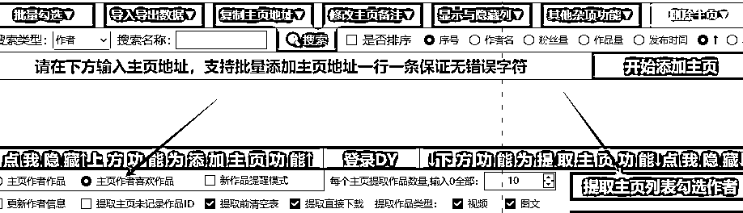
如果你添加的作者，他的喜欢作品是公开的，可以获取，不是公开的无法获取到，
勾选上图这个单选框，点击开始提取就可以获取了，操作方式和主页作品提取方式一样。
当勾选新作品提醒模式，
软件自动勾选主页作者作品与提取主页未记录作品id,你可以勾选，提取直接下载，提取作品类型，为条件，
定时间隔时间为例如有10个主页循环完休息多少秒，
然后再勾选定时提取勾选列表主页，就可以实现全自动新作品提醒模式了，软件不要关闭要开着才可以。
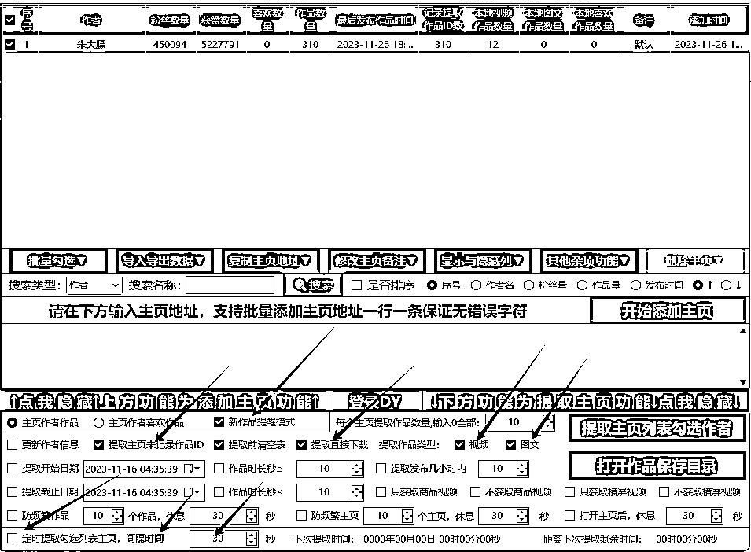
在软件设置，新作品消息推送微信设置里，最下方有教程，你可以根据教程设置微信Webhook地址。
设置完成后，最好点击发送测试消息，看看是否能正常推送消息，如果能正常推送即可。
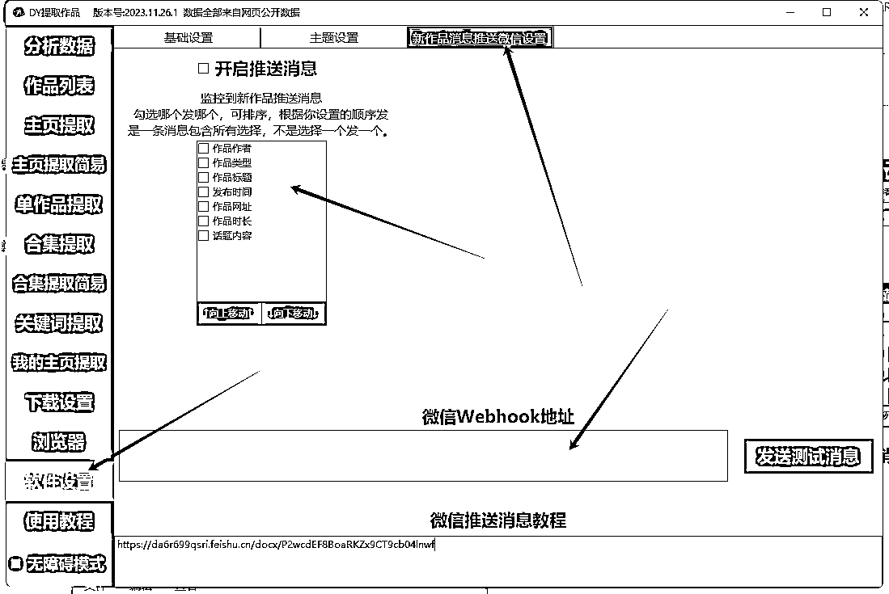
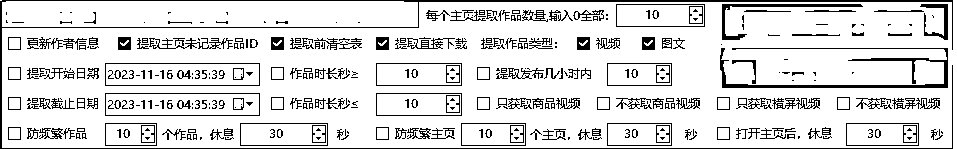
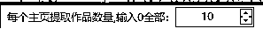
每个主页提取作品数量，输入0为全部，如果你设置10，那么每个主页只提取前10个作品，这10个作品就是他主页最新或者带置顶的作品。
例如：你的主页列表有10个主页全部勾选了，然后设置的10，那么这10个主页每个主页提取10个作品。
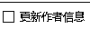
勾选后每次提取主页数据的时候，主页列表的数据会跟着实时更新。
勾选后，只提取未被记录下来的作品ID
例如 ：
第一次提取的时候提取了全部作品，已经记录了全部ID
第二次提取的时候，之前被记录的作品ID不会被提取到，
用途：方便记录每次提取，只提取你没有记录的作品ID的作品。
提取前清空表，是指当你点击开始提取，软件自动将作品列表的全部数据清空，只记录本次提取的作品数据。
提取直接下载在勾选后，当你开始提取，自动跟随下载，不勾选不会下载。

当勾选视频与图文的选择框后，开始提取就会提取到视频与图文，
去掉视频勾选，只勾选图文只提取图文作品。
去掉图文勾选，只勾选视频只提取视频作品。
软件自动保留互补，不会出现一个不选的情况。
例如你把视频去掉了，又把图文去掉了，自动勾选视频，自动补一个，防止没有能达标的条件。

提取开始日期是指，作品发布日期的最早时间
提取截止日期是指，作品发布日期的最晚时间
这两个选项，可以同时勾选，可以单独勾选。
举例： 同时勾选
设置开始日期：2023年8月8日08:08:08
设置截止日期：2023年9月9日09:09:09
达标作品只有在2023年8月8日08时08分08秒之后发布的作品才算达标这一项，精确到秒，
达标作品只有在2023年9月9日09时09分09秒之前发布的作品才算达标这一项，精确到秒，
以上这两个条件同时达标才算达标的作品。
没有达标作品发布日期2023年8月8日08时08分07秒。
达标作品发布日期2023年8月8日08时08分09秒。
达标作品发布日期2023年9月9日09时09分08秒。
没有达标作品发布日期2023年9月9日09时09分10秒。
举例： 只勾选开始日期
开始日期：2023年8月8日08:08:08
达标作品只有在2023年8月8日08时08分08秒之后发布的作品才算达标这一项，精确到秒，
当满足开始日期的条件就算达标。
没有达标作品发布日期2023年8月8日08时08分07秒。
达标作品发布日期2023年8月8日08时08分09秒。
举例： 只勾选截止日期
设置截止日期：2023年9月9日09:09:09
达标作品只有在2023年9月9日09时09分09秒之前发布的作品才算达标这一项，精确到秒，
当满足截止日期的条件就算达标。
达标作品发布日期2023年9月9日09时09分08秒。
没有达标作品发布日期2023年9月9日09时09分10秒。
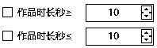
作品时长秒≥ 全名称：作品时长秒大于等于【？】秒
作品时长秒≤ 全名称：作品时长秒小于等于【？】秒
这个筛选条件用途：只筛选视频作品的作品时间，不会筛选图片，图片直接达标。

例如上图如果勾选的情况下，现在开始提取的时间是上午11点整，
只有当前时间凌晨1点整以后发布的作品时间才算达标。

勾选只获取商品视频，除了商品视频，不带商品【购物车】的作品都不算达标。
勾选不获取商品视频，作品是商品视频，都不算达标。
勾选只获取横屏视频，除了横屏视频，不是横屏视频的作品都不算达标。
勾选不获取横屏视频，作品是横屏视频，都不算达标。

当勾选后，在提取过程中，按照上图设置来讲，
每提取10个作品，软件自动休息30秒，然后继续提取，以此类推。。。
用途：有的时候会出现频繁访问的事情，这样会减少频繁，尤其定时提取。
当勾选后，在提取过程中，按照上图设置来讲，
每提取10个主页，软件自动休息30秒，然后继续提取，以此类推。。。
用途：有的时候会出现频繁访问的事情，这样会减少频繁，尤其定时提取。
当勾选后，在提取过程中，按照上图设置来讲，
当软件自动打开浏览器访问主页的时候，开始休息30秒软件不会有任何操作，
这个功能用途你可以在软件的浏览器上修改发布日期，请看下图：
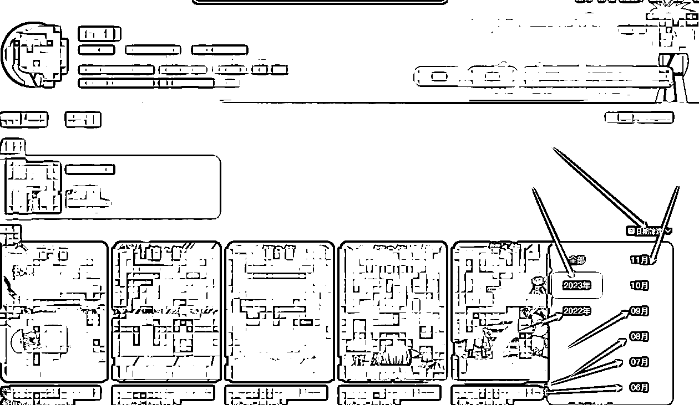
勾选这个选项后，然后定时自动点击开始提取按钮，方便你获取最新作品数据。
间隔时间是指，当开始定时后，软件内部自动计时，
也会显示在上面下次提取时间与距离下次提取剩余时间。
需要注意的是，列表没有勾选，开启定时提取是没效果的。
这个是提取主页简易版本，不需要添加主页，将主页地址一行一条放入文本框，
点击开始提取主页作品就可以，没有任何筛选条件，适合小白刚使用软件。
提取完成后，作品数据会自动进入作品列表，请到作品列表查看。
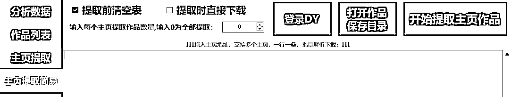
在文本框输入你准备好的作品地址，一行一条，然后点击开始提取作品即可。
提取完成后，作品数据会自动进入作品列表，请到作品列表查看。
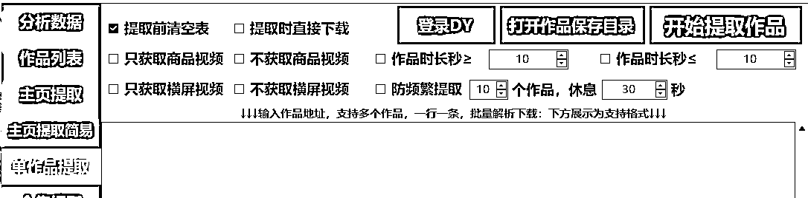
是指当你点击开始提取，软件自动将作品列表的全部数据清空，只记录本次提取的作品数据。
在勾选后，当你开始提取，自动跟随下载，不勾选不会下载。
勾选只获取商品视频，除了商品视频，不带商品【购物车】的作品不算达标。
勾选不获取商品视频，作品是商品视频，都不算达标。
勾选只获取横屏视频，除了横屏视频，不是横屏视频的作品不算达标。
勾选不获取横屏视频，作品是横屏视频，都不算达标。
作品时长秒≥ 全名称：作品时长秒大于等于【？】秒
作品时长秒≤ 全名称：作品时长秒小于等于【？】秒
这个筛选条件用途：只筛选视频作品的作品时间，不会筛选图片，图片直接达标。
当勾选后，在提取过程中，按照上图设置来讲，
每提取10个作品，软件自动休息30秒，然后继续提取，以此类推。。。
用途：有的时候会出现频繁访问的事情，这样会减少频繁，尤其定时提取。
首先在浏览器打开DY官网，找到你需要获取数据的合集作品然后再浏览器地址栏复制网址即可
提示：合集中任意一个作品地址即可，软件自动找到合集主页。
下图演示：按照图顺序看，
图1是作品地址，必须找到带合集的作品。
图2将浏览器地址栏的所有字符复制即可，这个就是主页地址。
关于地址怎么发送到电脑端，你可以在电脑登录微信，
手机发送到微信的文件传输助手，电脑端微信文件传输助手就可以同步消息。
图1：
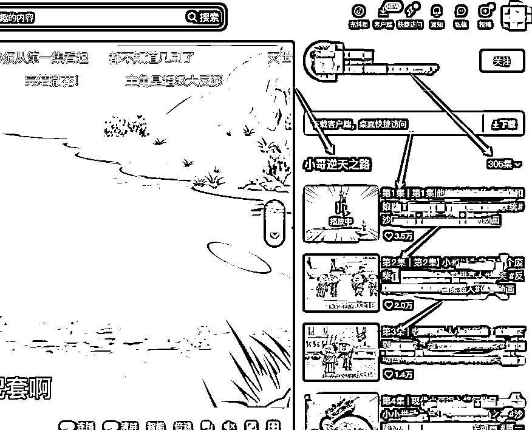
图2：

打开DY APP 找到你要提取合集作品，按照下方图片顺序操作：
图1：在作品点击分享按钮，会弹出下拉框。
图2：在下拉框点击复制链接即可。
关于地址怎么发送到电脑端，你可以在电脑登录微信，
手机发送到微信的文件传输助手，电脑端微信文件传输助手就可以同步消息。
图1：
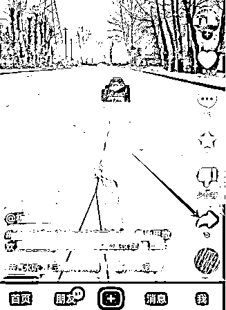
图2：
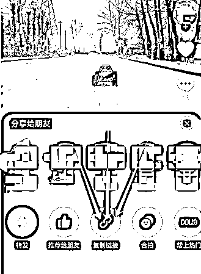
将自己复制到的作品带合集的地址，放入文本框，点击开始添加合集主页。
图1：

点击开始添加合集主页后，等待几秒会弹出添加合集主页结果，图2为添加成功。
点击开始添加合集主页后，等待几秒会弹出添加合集主页结果，图3为列表存在地址。
点击开始添加合集主页后，等待几秒会弹出添加合集主页结果，图4为添加失败与超时，
这种情况下要检查自己输入的地址是不是正确的，如果是正确的再次进行添加。
图2：
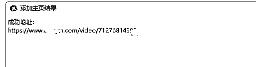
图3：
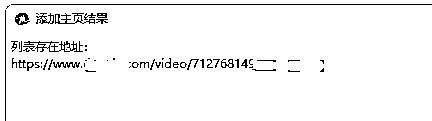
图4：
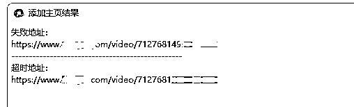
用于提取，删除，修改之类的操作，
最顶部的选择框，是操作列表列的全部选择框用途，可全选，选不选。
是根据你的添加顺序自动生成，
全部来自网页公开数据，这里不讲解。
是你提取下载的数据，识别方式，是根据你设置的目录，只要目录你在开始使用软件不去变更，作品数据不删除，他都会记录在内，例如你保存了10个作品，目录没有变，删除了其中一个作品，然后每次打开自动取寻找这个标题的作品是否存在，如果存在就自增1，你删除的那一个没有找到，最后显示的是本地存在9个作品。
添加合集主页后，自动显示默认，你可以手动修改，右键修改 或者 批量修改。
添加主页后自动生成当前添加时间，以你本地电脑时间为准，不是网络时间。
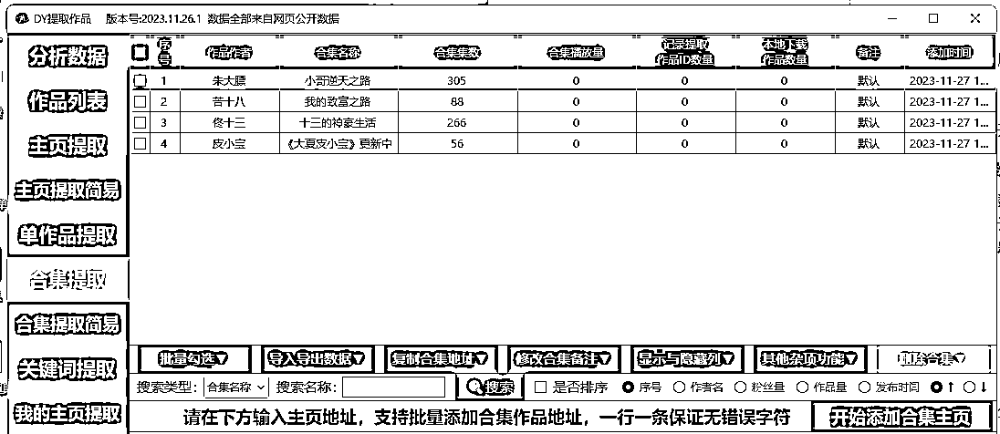
当你在主页列表随便一个作者主页一行，鼠标右键，会弹出菜单，这里有单独合集主页的功能。
就是已经记录的当前作者你所提取到的作品ID，如果清零了就复制不到了。
是记录作品ID的数量，清空后归零，他和合集提取的未记录作品ID相关。
是这个作品的合集主页网址，复制后在浏览器粘贴上去即可打开。
是在当前列表删除这个合集主页，本地合集主页信息自动删除掉，作品数据不会删除。
这个用于分类，因为你们每个做的领域不一样，有的人做了好几个领域，
例如：动漫，小说，沙雕动画，可以备注每个作者是哪个分类的，
用途：可以批量勾选指定备注分类的，保存作品时可以按照备注目录保存，当提取作品时，作品自动添加合集备注。
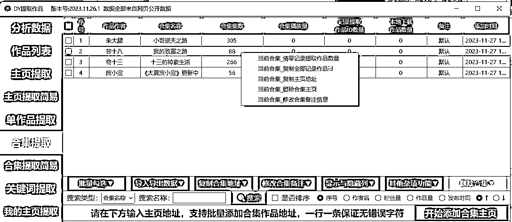
批量勾选按钮点击后会弹出一个菜单，选项，合集批量勾选只有备注，这就是上面说的分类批量勾选，
如果你有1000个合集主页 有3种分类：动漫，小说，沙雕动画，点击哪个就勾选哪个备注的全部合集。
需要注意的是：在勾选的时候不会去掉之前的勾选，请提前先去掉列表所有勾选，
点击序号两个字的签名的总选择框就会去掉全部勾选或者全部勾选。
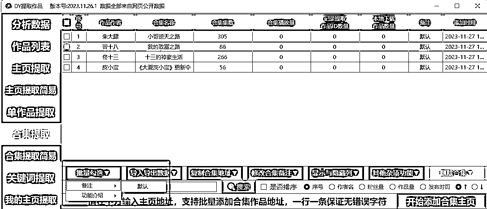
导出的TXT数据支持导入，Excel表格数据不支持导入。
导出的是合集列表全部合集数据，用于大数据分析，JSON格式。
导出的是合集列表勾选合集数据，用于大数据分析，JSON格式。
导出的是合集列表全部合集数据，用于Excel表格查看数据。
导出的是合集列表勾选合集数据，用于Excel表格查看数据。
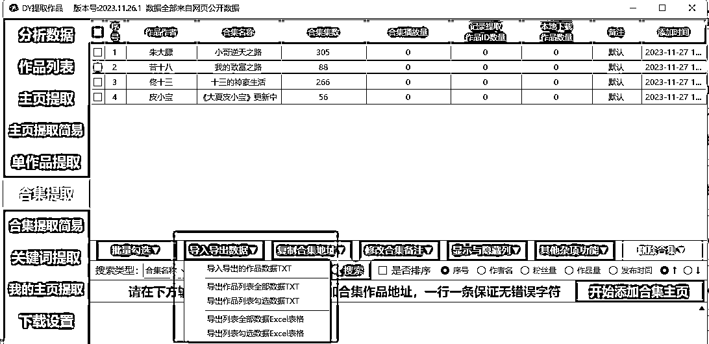
复制的是合集列表全部合集的合集主页网址。
复制的是合集列表勾选合集的合集主页网址。
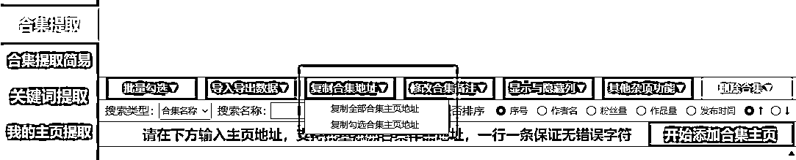
当点击后会弹出图2，输入新的备注信息，点击确定，全部合集的备注就变成了输入的。
当点击后会弹出图2，输入新的备注信息，点击确定，勾选合集的备注就变成了输入的。
小提示：如果修改单个合集备注可以列表右键修改。
图1
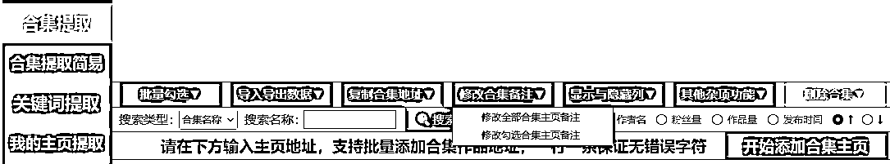
图2

当你点击后弹出的菜单，是合集主页列表对应的 每一列，
去掉前面的勾选，这个列就隐藏。
勾选前面的勾选，这个列就显示。
用途：减少不需要显示的列，显示你需要的数据。
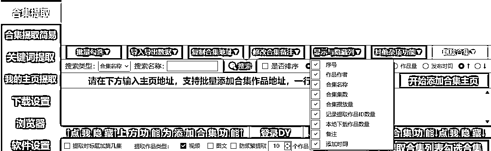
有的时候你删除了某个作品，列表不会自动刷新，你可以点击这个按钮。
这个是列表全部合集主页清空记录提取作品ID。
这个是列表勾选合集主页清空记录提取作品ID。
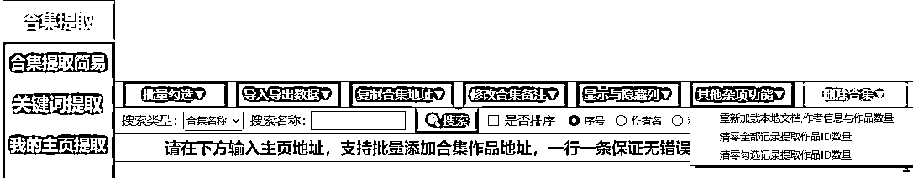
这个用途是删除合集列表全部合集数据，和本地保存的合集信息，不会删除作品数据。
这个用途是删除合集列表勾选合集数据，和本地保存的合集信息，不会删除作品数据。
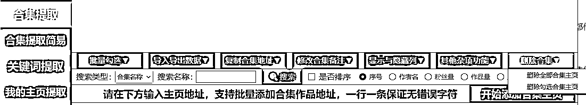
当你输入搜索名称后，点击搜索按钮，软件自动寻找你搜索的合集名称模糊搜索。
当你输入搜索名称后，点击搜索按钮，软件自动寻找你搜索的作者名称模糊搜索。
当你输入搜索名称后，点击搜索按钮，软件自动寻找你搜索的备注名称模糊搜索。
举例：列表有江湖数据工具箱的合集名称或作者或备注，输入江湖两字即可搜索到，搜索到的自动拉篮勾选。
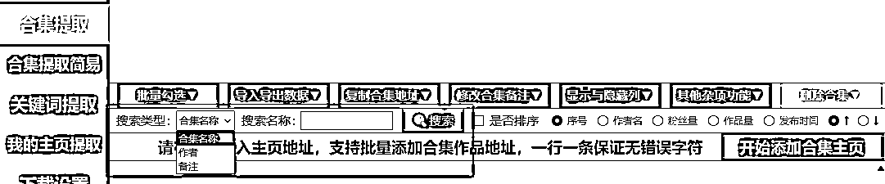
当勾选是否排序，根据你所选择的，自动排序，
左右面箭头：
↑代表从小到大的顺序(升序)
↓代表从大到小的顺序(降序)
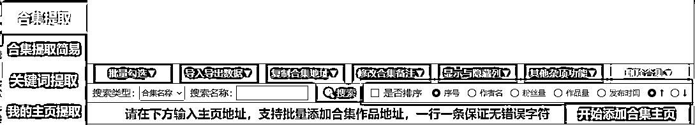
下图三个红色框框是按钮
最左边是隐藏添加合集功能，可以自己点击尝试，用途：不需要用的时候隐藏上看列表看的更多。
中间的按钮登录DY，点击后会弹出软件内置浏览器，自动打开DY官网，
你扫码登录后，等待几秒会自动弹出登录成功。
最右边是隐藏提取合集功能，可以自己点击尝试，用途：不需要用的时候隐藏上看列表看的更多。
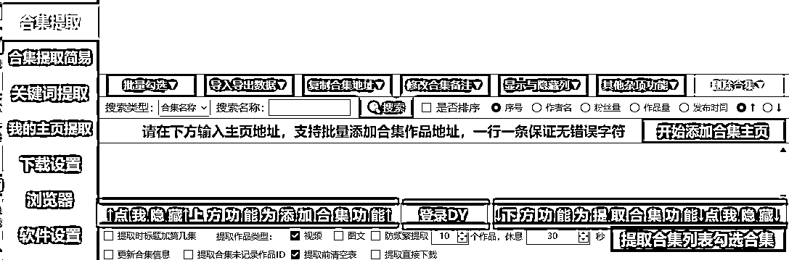
在合集列表勾选要提取的合集，在点击提取合集列表勾选合集，此时软件已经开始提取。
开始提取后，软件下方会出现当前提取进度，获取到作品数量，与达标作品数量，达标作品数量为最终进入作品列表的数据，如果出现不一致，说明你勾选了筛选条件达标的只有这些。
看弹出的提取结果达标作品56个，合集信息显示的集数也是56代表全部提取到，也全部记录了，如果下次你提取勾选提取合集未记录作品ID，记录的不会提取到。
图1：

图2：
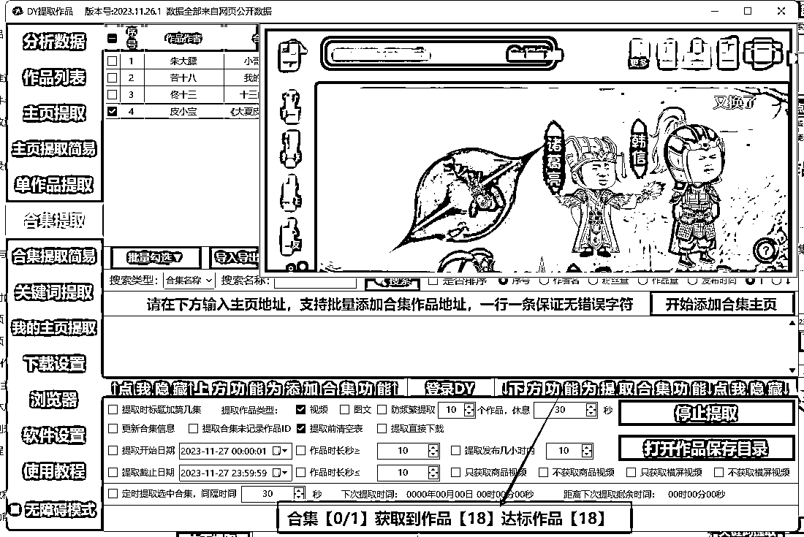
图3：
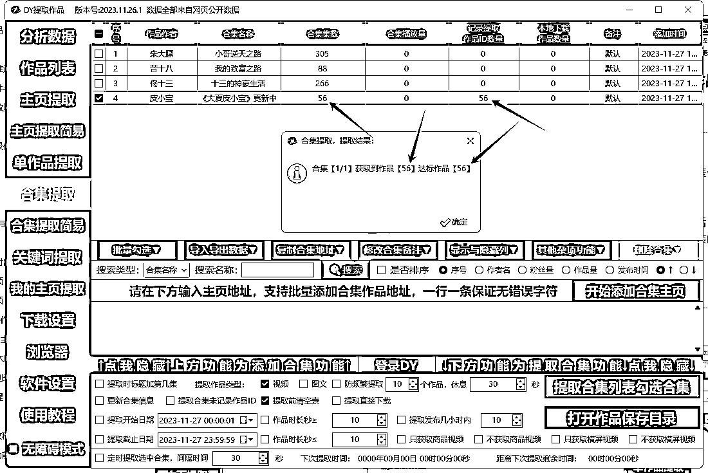
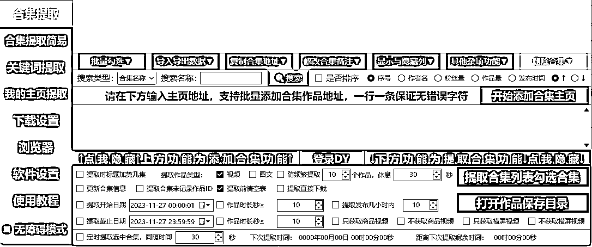

勾选后自动在作品标题增加集数。

当勾选视频与图文的选择框后，开始提取就会提取到视频与图文，
去掉视频勾选，只勾选图文只提取图文作品。
去掉图文勾选，只勾选视频只提取视频作品。
软件自动保留互补，不会出现一个不选的情况。
例如你把视频去掉了，又把图文去掉了，自动勾选视频，自动补一个，防止没有能达标的条件。
当勾选后，在提取过程中，按照上图设置来讲，
每提取10个作品，软件自动休息30秒，然后继续提取，以此类推。。。
用途：有的时候会出现频繁访问的事情，这样会减少频繁，尤其定时提取。
勾选后每次提取合集数据的时候，合集列表的数据会跟着实时更新。
勾选后，只提取未被记录下来的作品ID
例如 ：
第一次提取的时候提取了全部作品，已经记录了全部ID
第二次提取的时候，之前被记录的作品ID不会被提取到，
用途：方便记录每次提取，只提取你没有记录的作品ID的作品。

提取前清空表，是指当你点击开始提取，软件自动将作品列表的全部数据清空，只记录本次提取的作品数据。
提取直接下载在勾选后，当你开始提取，自动跟随下载，不勾选不会下载。

提取开始日期是指，作品发布日期的最早时间
提取截止日期是指，作品发布日期的最晚时间
这两个选项，可以同时勾选，可以单独勾选。
举例： 同时勾选
设置开始日期：2023年8月8日08:08:08
设置截止日期：2023年9月9日09:09:09
达标作品只有在2023年8月8日08时08分08秒之后发布的作品才算达标这一项，精确到秒，
达标作品只有在2023年9月9日09时09分09秒之前发布的作品才算达标这一项，精确到秒，
以上这两个条件同时达标才算达标的作品。
没有达标作品发布日期2023年8月8日08时08分07秒。
达标作品发布日期2023年8月8日08时08分09秒。
达标作品发布日期2023年9月9日09时09分08秒。
没有达标作品发布日期2023年9月9日09时09分10秒。
举例： 只勾选开始日期
开始日期：2023年8月8日08:08:08
达标作品只有在2023年8月8日08时08分08秒之后发布的作品才算达标这一项，精确到秒，
当满足开始日期的条件就算达标。
没有达标作品发布日期2023年8月8日08时08分07秒。
达标作品发布日期2023年8月8日08时08分09秒。
举例： 只勾选截止日期
设置截止日期：2023年9月9日09:09:09
达标作品只有在2023年9月9日09时09分09秒之前发布的作品才算达标这一项，精确到秒，
当满足截止日期的条件就算达标。
达标作品发布日期2023年9月9日09时09分08秒。
没有达标作品发布日期2023年9月9日09时09分10秒。

作品时长秒≥ 全名称：作品时长秒大于等于【？】秒
作品时长秒≤ 全名称：作品时长秒小于等于【？】秒
这个筛选条件用途：只筛选视频作品的作品时间，不会筛选图片，图片直接达标。

例如上图如果勾选的情况下，现在开始提取的时间是上午11点整，
只有当前时间凌晨1点整以后发布的作品时间才算达标。
勾选只获取商品视频，除了商品视频，不带商品【购物车】的作品都不算达标。
勾选不获取商品视频，作品是商品视频，都不算达标。

勾选只获取横屏视频，除了横屏视频，不是横屏视频的作品都不算达标。
勾选不获取横屏视频，作品是横屏视频，都不算达标。
勾选这个选项后，然后定时自动点击开始提取按钮，方便你获取最新作品数据。
间隔时间是指，当开始定时后，软件内部自动计时，
也会显示在上面下次提取时间与距离下次提取剩余时间。
需要注意的是，列表没有勾选，开启定时提取是没效果的。
这个是提取合集简易版本，不需要添加合集，将带合集的作品地址一行一条放入文本框，
点击开始提取个护作品就可以，没有任何筛选条件，适合小白刚使用软件。
提取完成后，作品数据会自动进入作品列表，请到作品列表查看。
在左侧文本框内输入你要搜索的关键词，一行一条，然后设置好自己需要筛选的条件，如果不筛选直接点击开始提取关键词按钮，软件就会开始提取。
每个关键词提取作品数量，输入0为全部，官网给多少提取多少，如果你设置10，那么每个关键词只提取前10个作品，这10个作品不一定是这个关键词最新作品，需要设置网页选择排序。
例如：你输入10个关键词，然后设置的10，那么这10个关键词每个关键词提取10个作品。
当勾选视频与图文的选择框后，开始提取就会提取到视频与图文，
去掉视频勾选，只勾选图文只提取图文作品。
去掉图文勾选，只勾选视频只提取视频作品。
软件自动保留互补，不会出现一个不选的情况。
例如你把视频去掉了，又把图文去掉了，自动勾选视频，自动补一个，防止没有能达标的条件。

提取前清空表，是指当你点击开始提取，软件自动将作品列表的全部数据清空，只记录本次提取的作品数据。

提取直接下载在勾选后，当你开始提取，自动跟随下载，不勾选不会下载。
例如上图如果勾选的情况下，现在开始提取的时间是上午11点整，
只有当前时间凌晨1点整以后发布的作品时间才算达标。
勾选只获取商品视频，除了商品视频，不带商品【购物车】的作品都不算达标。
勾选不获取商品视频，作品是商品视频，都不算达标。
勾选只获取横屏视频，除了横屏视频，不是横屏视频的作品都不算达标。
勾选不获取横屏视频，作品是横屏视频，都不算达标。
提取开始日期是指，作品发布日期的最早时间
提取截止日期是指，作品发布日期的最晚时间
这两个选项，可以同时勾选，可以单独勾选。
举例： 同时勾选
设置开始日期：2023年8月8日08:08:08
设置截止日期：2023年9月9日09:09:09
达标作品只有在2023年8月8日08时08分08秒之后发布的作品才算达标这一项，精确到秒，
达标作品只有在2023年9月9日09时09分09秒之前发布的作品才算达标这一项，精确到秒，
以上这两个条件同时达标才算达标的作品。
没有达标作品发布日期2023年8月8日08时08分07秒。
达标作品发布日期2023年8月8日08时08分09秒。
达标作品发布日期2023年9月9日09时09分08秒。
没有达标作品发布日期2023年9月9日09时09分10秒。
举例： 只勾选开始日期
开始日期：2023年8月8日08:08:08
达标作品只有在2023年8月8日08时08分08秒之后发布的作品才算达标这一项，精确到秒，
当满足开始日期的条件就算达标。
没有达标作品发布日期2023年8月8日08时08分07秒。
达标作品发布日期2023年8月8日08时08分09秒。
举例： 只勾选截止日期
设置截止日期：2023年9月9日09:09:09
达标作品只有在2023年9月9日09时09分09秒之前发布的作品才算达标这一项，精确到秒，
当满足截止日期的条件就算达标。
达标作品发布日期2023年9月9日09时09分08秒。
没有达标作品发布日期2023年9月9日09时09分10秒。
作品时长秒≥ 全名称：作品时长秒大于等于【？】秒
作品时长秒≤ 全名称：作品时长秒小于等于【？】秒
这个筛选条件用途：只筛选视频作品的作品时间，不会筛选图片，图片直接达标。
当勾选后，在提取过程中，按照上图设置来讲，
每提取10个作品，软件自动休息30秒，然后继续提取，以此类推。。。
用途：有的时候会出现频繁访问的事情，这样会减少频繁，尤其定时提取。
网页选择排序依据，是你选择某一项后，软件运行时自动在网页选择排序类型。
具体可以打开关键词网页自己看看。
网页选择发布时间，是你选择某一项后，软件运行时自动在网页选择你设置的发布时间。
具体可以打开关键词网页自己看看。
勾选这个选项后，然后定时自动点击开始提取按钮，方便你获取最新作品数据。
间隔时间是指，当开始定时后，软件内部自动计时，
也会显示在上面下次提取时间与距离下次提取剩余时间。
需要注意的是，没有关键词，开启定时提取是没效果的。
1.获取话题网址
先点击登录DY，不登录软件无法获取到你的主页信息。
点击开始提取我的关注作者主页地址，过了N秒后提取完成后，你关注的主页地址会展示在文本框内。
开始提取时软件状态，图中已经提取到自己关注的100个作者地址。
提取完会弹出提取结果，提取结果获取到128条作者地址，正好我的关注也是128条，完全正确。
图1：
图2：
图3：
先点击登录DY，不登录软件无法获取到你的主页信息。
点击开始提取我的作品，过了N秒后提取完成后，你的作品会添加到作品列表内。
开始提取时软件状态，因为我的作品比较少只有4个所以我裁图不到提取过程。
提取完会弹出提取结果，提取结果获取到4个作品，我的作品也是4个，完全正确。
图1：
图2：
图3：
先点击登录DY，不登录软件无法获取到你的主页信息。
点击开始提取我的作品，过了N秒后提取完成后，你的喜欢作品会添加到作品列表内。
开始提取时软件状态，已经提取到了52个喜欢作品。
提取完会弹出提取结果，提取结果获取到117个作品，我的喜欢作品也是117个，完全正确。
图1：
图2：
图3：
先点击登录DY，不登录软件无法获取到你的主页信息。
点击开始提取我的收藏，过了N秒后提取完成后，你的收藏作品会添加到作品列表内。
开始提取时软件状态，已经提取到了9个作品。
提取完会弹出提取结果，提取结果获取到15个作品，我的收藏作品也是15个，完全正确。
图1：
图2：
图3：
用于提取，删除，修改之类的操作，
最顶部的选择框，是操作列表列的全部选择框用途，可全选，选不选。
是根据你的添加顺序自动生成，
每个提取方式加入到作品列表的作品数据，都会记录是根据哪个方式提取到的作品数据。
只有视频与图文，显示该作品数据是什么类型的。
全部来自网页公开数据，这里不讲解。
如果这个作品是商品类型带购物车的，显示是，不是商品类型，显示否。
如果这个作品是横屏类型的，显示是，不是横屏类型，显示否。
是单独在作品列表单独给这个作品备注，也可以在下方按钮批量备注。
是在主页提取作品数据时，如果你提取的主页做了主页备注，那么这个作品加入作品列表会自动带上主页备注。
是在合集提取作品数据时，如果你提取的合集做了合集备注，那么这个作品加入作品列表会自动带上合集备注。
单击批量勾选会弹出菜单，有多种勾选方式：
选择作者昵称后，软件自动展示根据你提取方式得到的作者昵称，进行分类勾选。
全部作者选择勾选，是列表全部的作者昵称，
例如这个作者昵称列表有10个作品，你选择了会全部勾选上。
提取方式勾选，根据你选择的提取方式会全部勾选上。
这里关键词使用下拉框，如果有关键词的会展示，选择即勾选，
图中我使用了两个关键词，如果我选择了美食这个关键词，
作品立马会勾选上所有是关键词提取 关键词为美食的作品。
作品类型，只有两种：视频作品 与 图文作品，点击即可勾选全部这个类型的作品。
作品质量勾选会根据作品列表存在的质量进行显示，点击某个质量就会勾选全部这个质量的作品。
下载状态会显示列表全部的状态，可以进行点击勾选所需的。
商品视频勾选，共两个选项可以根据所需进行勾选。
横屏视频勾选，共两个选项可以根据所需进行勾选。
备注系列，点击下拉框可以看到指定的备注点击即可勾选指定备注作品。
导出的TXT数据支持导入，Excel表格数据不支持导入。
导出的是作品列表全部作品数据，用于大数据分析，JSON格式。
导出的是作品列表勾选作品数据，用于大数据分析，JSON格式。
导出的是作品列表全部作品数据，用于Excel表格查看数据。
导出的是作品列表勾选作品数据，用于Excel表格查看数据。
复制的是作品列表全部作品网址。
复制的是作品列表勾选的作品网址。
复制的是作品列表全部作品主页网址，自动去除重复主页网址，同样主页网址，只保留一个。
复制的是作品列表勾选的作品主页网址，自动去除重复主页网址，同样主页网址，只保留一个。
当点击后会弹出图2，输入新的备注信息，点击确定，全部作品的备注就变成了输入的。
当点击后会弹出图2，输入新的备注信息，点击确定，勾选作品的备注就变成了输入的。
小提示：如果修改单个作品备注可以列表右键修改。
主页备注与合集备注不支持在此页面修改，跟随你提取类型定制的备注。
图1：
图2：

当你点击后弹出的菜单，是主页列表对应的 每一列，
去掉前面的勾选，这个列就隐藏。
勾选前面的勾选，这个列就显示。
用途：减少不需要显示的列，显示你需要的数据。
这个用途是删除作品列表全部作品数据，和本地保存的作品信息，不会删除作品文件。
这个用途是删除作品列表勾选作者数据，和本地保存的作品信息，不会删除作品文件。
当勾选排序选择框任意一个后软件会排序列表数据，根据选择排序。
代表从多到少的顺序(降序)
代表从少到多的顺序(升序)
必须勾选才会触发所有筛选条件，才会生效，达标条件与不达标条件，进行筛选显示在作品列表。
不勾选的情况下你所设置的条件，有一项达标，就显示这个作品数据在列表中。
勾选的情况下你所设置的条件，必须全部达标，才显示这个作品数据在列表中。
图3：
图1：
图2：
图3：
双击作品列表标题列的指定作品如果本地存在作品，就在本地播放，
如果没有自动打开浏览器在网页播放。
图文作品不会本地播放，直接会去网页播放。
双击作品列表标题列的指定作品软件自动打开浏览器在网页播放。
这里的按钮点击后会出现图2的控件，是更新作品数据用的，
按照你所需定期更新作品的数据，进行数据分析。
设置好条件后，点击列表勾选更新数据按钮即可开始自动更新数据。
完成后会提示完成更新多少条作品数据。
图1：
图2：
图3：
当勾选后，在更新过程中，按照上图设置来讲，
每更新10个作品，软件自动休息30秒，然后继续更新，以此类推。。。
用途：有的时候会出现频繁访问的事情，这样会减少频繁，尤其定时更新。
当勾选视频与图文的选择框后，开始更新就会更新视频与图文，
去掉视频勾选，只勾选图文只更新图文作品。
去掉图文勾选，只勾选视频只更新视频作品。
软件自动保留互补，不会出现一个不选的情况。
例如你把视频去掉了，又把图文去掉了，自动勾选视频，自动补一个，防止没有能达标的条件。
更新直接下载在勾选后，当你开始更新，自动跟随下载，不勾选不会下载，只更新数据。
勾选这个选项后，然后定时自动点击开始更新按钮，方便你获取最新作品数据。
间隔时间是指，当开始定时后，软件内部自动计时，
也会显示在上面下次更新时间与距离下次更新剩余时间。
需要注意的是，列表没有勾选作品数据，开启定时更新是没效果的。
当勾选替换标题内容后，每当保存作品数据时，会根据你设置的条件进行替换。
江湖工具箱是分析作品数据的软件
是分析作品
是最好的一款分析作品
是分析作品*是最好的一款分析作品
江湖工具箱是最好的一款分析作品数据的软件
这里是设置保存作品标题：
最低勾选一种，否则没有标题，自动补作品id。
标题编码：
当勾选标题编码后，自动在你所勾选的标题选项，增加编码，
正常增加编码是选项汉字转拼音的头一位，具体增加什么编码可以自己尝试。
勾选后，如果作品有封面图片直接下载。
作品如果是图文作品，存在背景音乐，勾选后直接下载。
获取到的作品数据标题中有些作品带#与@内容，勾选后可去除。
勾选后，更换MD5值，具体可百度：MD5值是什么。
为什么会存在选择下载类型这个功能，提取时已经筛选视频或图文，这不多余吗？
很多时候用户的习惯是提取时勾选视频与图文，选择下载类型是下载筛选的最后一道工序。
下载任务中：全部会达标，因为只有视频作品与图文作品。
下载任务中：会下载视频作品，图文作品不会下载。
下载任务中：会下载图文作品，视频作品不会下载。
这个功能默认勾选，当你设置的根路径所在硬盘，低于你设置的值，停止下载，防止硬盘满。
极速下载器（三方付费价格低，下载速度快支持多线程）一个月9.68元
内置下载器(免费下载速度慢，不支持多线程)
aria2c下载器(免费下载速度慢，不支持多线程)
购买完极速下载器，回到软件填写江小二工具箱的用户名与密码，
点击查询，授权日期是大于你当前时间即可使用极速下载器功能，
先勾选极速下载器，图1。
在设置下载线程数量：推荐设置5，图2。这样就可以极速下载了。
图1：
我这里演示的时间：2023年11月28日06:13:31，可能你看教程的时间大于现在时间，具体以你的查询为准。
图2：
内置下载器与aria2c下载器请设置【1】，这两个不支持多线程。
如果使用极速下载器可以设置1以上，支持多线程下载，速度超快。
自定义独立模式目录层，是指你可以设置文件夹的层数，勾选哪个就多了哪一层。
按照上图勾选，现在出现的目录结构是这样的，
设置的跟目录：D:\保存作品\
作品关键词是：美食
作品作者是：老江湖牛逼
作品类型是：视频
作品标题是：测试标题.mp4
D:\保存作品\关键词作品\美食\视频作品\测试标题.mp4
目录结果为：D:\保存作品\关键词作品\美食\老江湖牛逼\视频作品\测试标题.mp4
目录结果为：D:\保存作品\关键词作品\老江湖牛逼\视频作品\美食\测试标题.mp4
图1：
图2：
所有下载的图文作品，图片，音乐，封面，都保存在一个文件夹，不会创建独立文件夹。
每个图文作品下载的图片，音乐，封面，都会按照你所设置的作品标题创建一个文件夹保存在里面。
图1：就是创建的文件夹。
图2：是文件夹内容。
图1：

图2：
这个根路径，是你下载的作品数据，保存的最终目录以他为最顶端目录。
点击可自由修改你要设置的路径。
点击后软件会自动更改为：软件默认的路径。
点击后打开你当前的保存路径。
浏览器是自动打开的，当提取作品数据或者其他使用软件内置浏览器的时候，会在这里显示，
如果你在提取主页或者单作品的时候，浏览器正常会跟着你的页面走，如果你需要显示软件内的最大化浏览器，就进入这里，浏览器页面也会跟随进入这里。
小提示：
在浏览器的边界点击拖动就是移动，
在浏览器的边界出现的小圆点，鼠标放上点击可放大拉伸大小。
当勾选后，软件窗口最小化，电脑任务栏不会显示软件，会到右下角显示。
点击后删除浏览器全部缓存文件，有的时候打不开网页或者卡顿，点击即可。
只删除登录信息，不删除缓存数据。
有时候网络问题打不开官网可以选择 后面两个。
软件使用默认主题，你可以选择暗夜主题，或者自定义自己设置看着舒服的颜色。
每个颜色最左面都有标注，是什么位置的颜色，与字体颜色。
当勾选无障碍模式，所有筛选条件都不会生效，只要提取到的作品数据，全部进入作品列表。